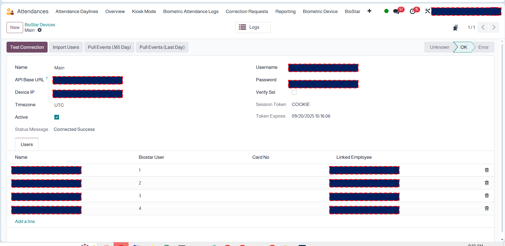
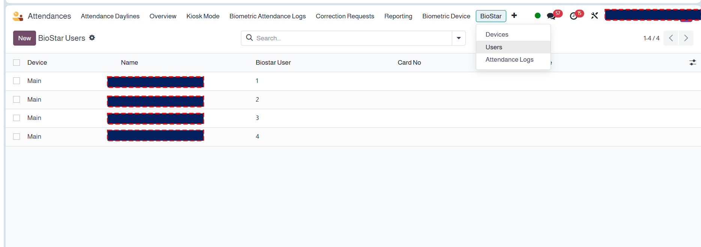
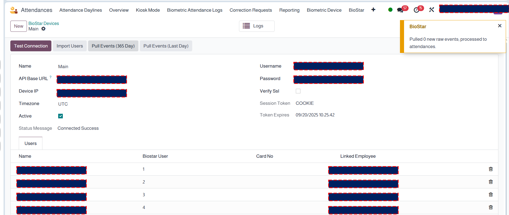
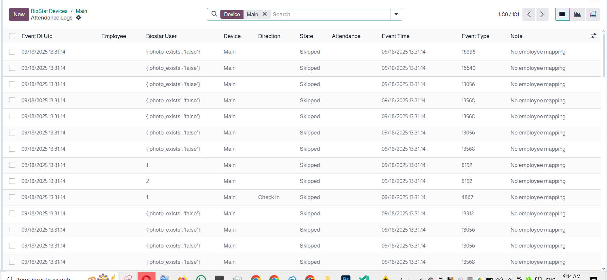

Compatibility
Last Updated
Seamlessly pull attendance logs from Suprema BioStar 2 into Odoo HR Attendance. Schedule automatic syncs, run on-demand via wizard, and keep data clean with smart de-duplication and timezone handling.
Key Features
🔁 Sync ModesManual wizard (date range) and scheduled cron. Safe retry with de-duplication. |
🌐 Multi-DeviceConnect multiple BioStar servers/sites. Separate credentials & timezones. |
👥 User MappingMap BioStar user → Odoo employee. Flexible matching by device user ID. |
⏱ TimezonesConsistent conversion to company timezone (e.g., KSA). |
📧 AlertsOptional mail notifications for sync failures & summaries. |
🔒 RobustConnectivity tests, graceful error handling, and activity logs. |
Screenshots
|

Device profile: URL, credentials, timezone, test connection. |

Map BioStar users to Odoo employees. |
|

On-demand sync by date range with summary. |

Raw log viewer before creating HR Attendance. |
يوفّر هذا الموديول مزامنة تلقائية لسجلات الحضور من Suprema BioStar 2 إلى نظام أودو. يدعم المزامنة اليدوية والمجدولة والتعامل مع المناطق الزمنية ومنع التكرار وإرسال التنبيهات.
Does it create HR Attendance records automatically?
Yes—raw logs are normalized then translated into HR Attendance according to the mapping rules.
What if the same log appears twice?
The connector avoids duplicates using a composite key (device, user, timestamp).
Can I connect multiple BioStar servers?
Yes—create a device record per server/site, each with its own credentials.
Contact us for assistance, device-side tweaks, or advanced reporting.
Email Support